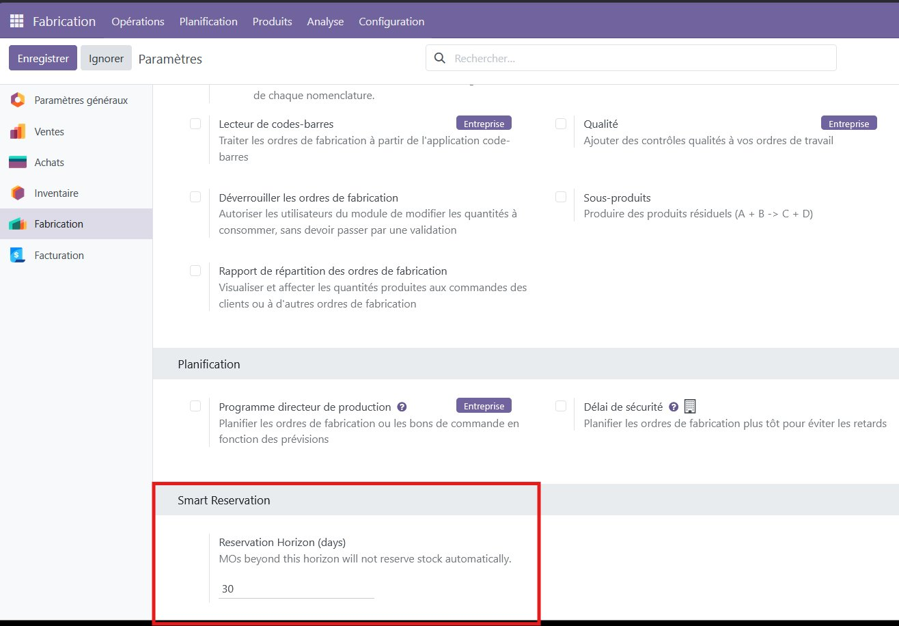
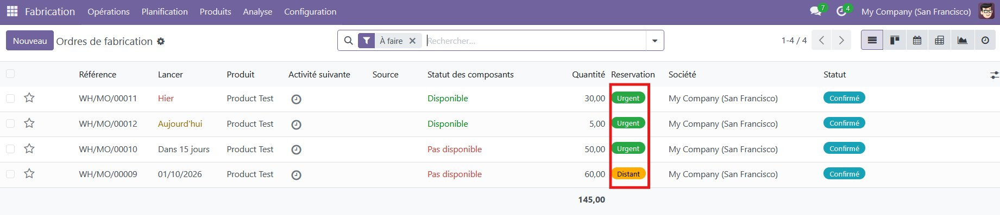
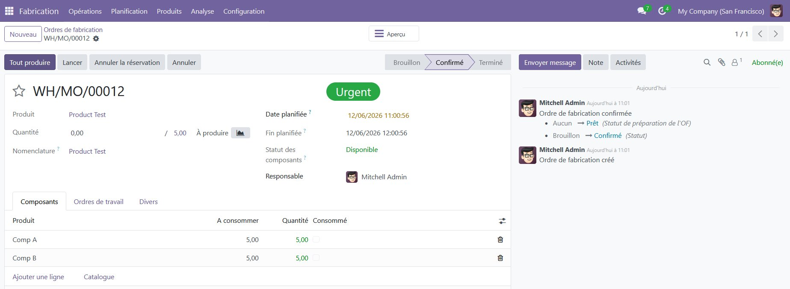
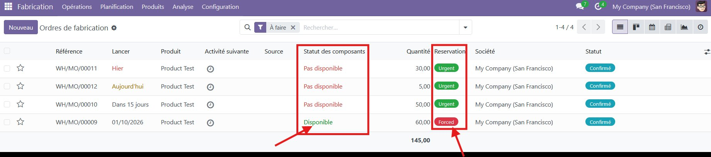
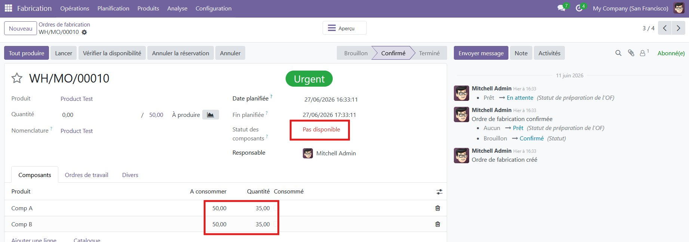
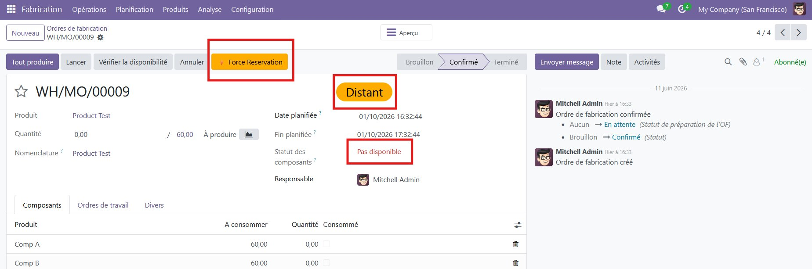
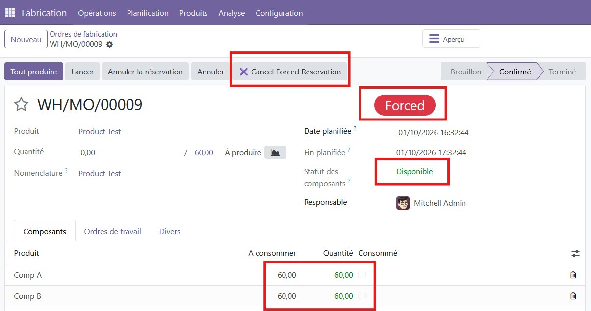
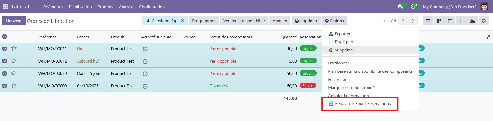

Réservation de stock intelligente et automatique pour vos ordres de fabrication.
Par défaut, Odoo réserve le stock pour les ordres de fabrication (OF) selon la règle "premier confirmé, premier servi". Concrètement, un OF planifié dans plusieurs mois peut réserver des composants dont un OF urgent — dû demain — a un besoin immediat. Résultat : retards de production, gestion de crise de dernière minute, et réajustements manuels du stock qui prennent un temps précieux.
MRP Smart Reservation classe automatiquement chaque ordre de fabrication selon trois niveaux de priorité, affichés directement sous forme de badges colorés dans la liste et sur la fiche de l'OF :
Tout commence par un seul réglage : l'horizon de réservation (en jours), accessible depuis Fabrication → Configuration → Paramètres. Tout OF planifié au-delà de cet horizon est considéré "Distant" et ne réservera jamais de stock automatiquement.

Dans la liste des ordres de fabrication, chaque OF affiche son badge de priorité. Ici, trois OF urgents (échéance proche) et un OF distant (octobre 2026) — le stock est encore disponible pour tous.

Sur la fiche d'un OF urgent (WH/MO/00012, dû aujourd'hui), le badge "Urgent" est affiché en évidence et le statut des composants est "Disponible" : le stock a bien été réservé pour cet OF prioritaire.

Lorsque le stock devient insuffisant pour satisfaire tous les OF confirmés, Smart Reservation rééquilibre automatiquement les réservations : les OF urgents passent en priorité, même si cela signifie que d'autres OF urgents (mais moins prioritaires dans l'ordre chronologique) se retrouvent temporairement "Pas disponible".

Sur WH/MO/00010 (urgent, dû dans 15 jours), le statut des composants passe à "Pas disponible" : seule une partie du stock requis (35 sur 50 unités) a pu être réservée, le reste étant alloué à des OF encore plus prioritaires.

Un client VIP demande une livraison anticipée sur un OF normalement "Distant" (WH/MO/00009, planifié pour octobre) ? Le bouton "Force Reservation" — visible uniquement sur les OF distants — permet de le faire passer manuellement en priorité absolue.

Une fois forcé, l'OF affiche le badge "Forced" (rouge), le statut des composants passe à "Disponible" et le stock nécessaire est intégralement réservé. Un bouton "Cancel Forced Reservation" permet de revenir en arrière à tout moment.

Besoin de relancer le moteur de priorité immédiatement, sans attendre le prochain cron ou la prochaine confirmation d'OF ? Sélectionnez vos ordres de fabrication dans la liste et utilisez l'action "Rebalance Smart Reservations".

Le rééquilibrage se déclenche automatiquement dans trois cas :
Aucune intervention manuelle n'est donc nécessaire au quotidien — le moteur tourne en arrière-plan et garde vos réservations alignées sur les vraies priorités de production.
| Sans ce module | Avec MRP Smart Reservation |
|---|---|
| Le stock est réservé selon l'ordre de confirmation des OF | Le stock est réservé selon l'urgence réelle |
| Les OF urgents peuvent être bloqués par des OF lointains | Les OF urgents sont toujours prioritaires |
| Réallocation manuelle du stock, tableaux Excel, gestion de crise | Entièrement automatique, fonctionne en arrière-plan |
| Aucune visibilité sur les conflits de réservation | Badges colorés visibles d'un coup d'œil |
mrp, stock uniquement — aucun module supplémentaire requisAutomatic, priority-based stock reservation for your manufacturing orders.
By default, Odoo reserves stock for Manufacturing Orders (MOs) on a first-confirmed, first-served basis. This means an MO scheduled months from now can silently reserve components that an urgent MO — due tomorrow — desperately needs. The result: production delays, last-minute firefighting, and manual stock juggling that nobody has time for.
MRP Smart Reservation automatically classifies every Manufacturing Order into one of three priority levels, shown as color-coded badges directly in the MO list and form view:
It all starts with one setting: the reservation horizon (in days), found under Manufacturing → Configuration → Settings. Any MO scheduled beyond this horizon is treated as "Distant" and will never automatically reserve stock.
In the Manufacturing Orders list, every MO shows its priority badge. Here, three urgent MOs (due soon) and one distant MO (October 2026) — stock is still available for all of them.
On the form of an urgent MO (WH/MO/00012, due today), the "Urgent" badge is prominently displayed and the component status reads "Available": stock has been successfully reserved for this priority order.
When available stock becomes insufficient to satisfy all confirmed MOs, Smart Reservation automatically rebalances reservations: the most urgent MOs take priority, even if that means other urgent — but less prioritized — MOs temporarily become "Not Available".
On WH/MO/00010 (urgent, due in 15 days), the component status switches to "Not Available": only part of the required stock (35 out of 50 units) could be reserved, the rest having been allocated to even higher-priority MOs.
A VIP customer requests an early delivery on an MO normally classified as "Distant" (WH/MO/00009, scheduled for October)? The "Force Reservation" button — visible only on distant MOs — lets you manually bump it to top priority.
Once forced, the MO displays the "Forced" badge (red), the component status switches to "Available", and the required stock is fully reserved. A "Cancel Forced Reservation" button lets you revert at any time.
Need to re-run the priority engine immediately, without waiting for the next cron run or MO confirmation? Select your Manufacturing Orders in the list and use the "Rebalance Smart Reservations" action.
Rebalancing is triggered automatically in three cases:
No manual intervention is needed day-to-day — the engine runs in the background and keeps your reservations aligned with real production priorities.
| Without this module | With MRP Smart Reservation |
|---|---|
| Stock reserved by whichever MO was confirmed first | Stock reserved based on real urgency |
| Urgent orders delayed by far-future reservations | Urgent orders always prioritized |
| Manual stock reallocation, spreadsheets, firefighting | Fully automatic, runs in the background |
| No visibility into reservation conflicts | Clear color-coded badges show priority at a glance |
mrp, stock only — no extra modules required